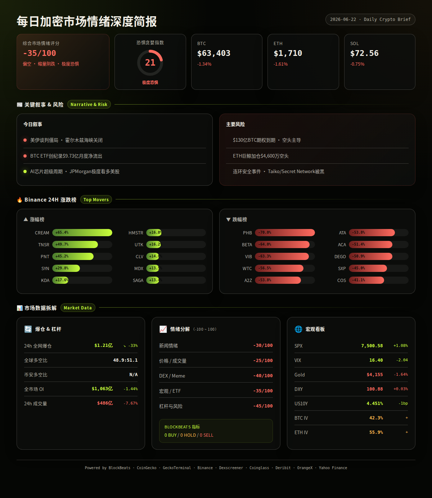
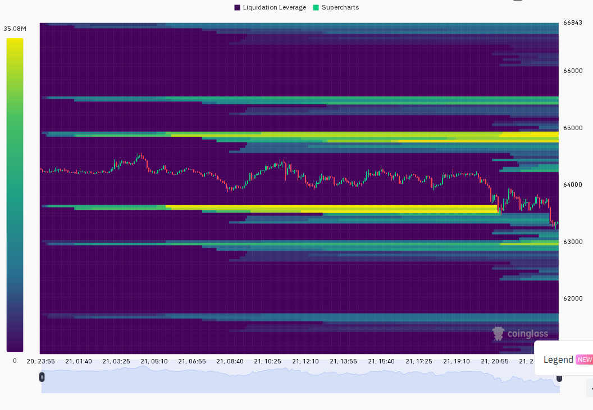
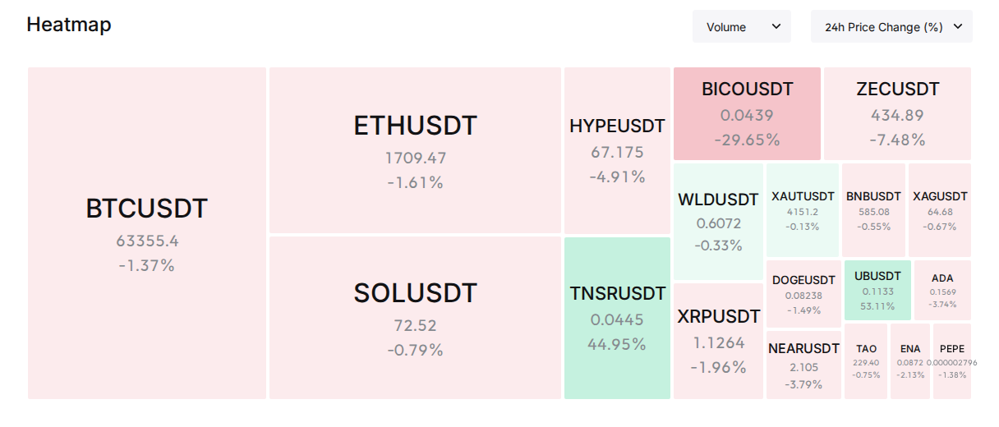

美伊谈判陷入僵局 加密市场延续弱势 BTC承压于$63,000关口
━━━━━━━━━━━━━━━━━━━━━━
⏰ 1. 24小时变化:
恐惧与贪婪指数 21 (Extreme Fear)
BTC $63,402.56 -1.34%
ETH $1,710.27 -1.61%
SOL $72.56 -0.75%
VIX 16.40 -2.04 正常区间
成交量 $486亿 -7.67%
DXY 100.88 +0.03%
爆仓 $1.21亿 -33.23%
━━━━━━━━━━━━━━━━━━━━━━
—— BTC / ETH / SOL ——
FOMC鹰派余波持续压制加密市场，比特币ETF资金大幅流出，矿工进入投降期，但Michael Saylor暗示新一轮BTC购买即将到来。
信息 1: FOMC 6月17日会议后BTC从$65,000-$66,000区间下滑至$63,850-$64,400，总加密市值蒸发近3%，山寨币跌幅更深达4-7%。(CryptoTimes, 综合报道)
信息 2: 美国比特币现货ETF过去30天录得创纪录的$9.73亿净流出，加密市场持续承压。(BlockBeats)
信息 3: 比特币矿工进入"投降期"，挖矿难度从ATH下降超20%，Puell Multiple指标显示$59,000可能是本轮底部。不过Michael Saylor发推暗示新一轮BTC购买即将进行。(BlockBeats)
信息 4: $130亿BTC期权即将到期，空头占据主导，多头在6月可能持续承压。(BlockBeats)
信息 5: 巨鲸三倍加仓ETH空头至26,500 ETH (约$4,600万)，入场价$1,734.41。此前另一未知巨鲸也开仓23,000 ETH空头。ETH主力仓位呈现明显看空信号。(BlockBeats)
—— 宏观 / 地缘政治 ——
全球宏观环境出现诡异分化：传统股市强势反弹（标普500涨至7,500），而黄金、加密货币等避险资产同步下跌。美伊谈判悬而未决、霍尔木兹海峡局势持续恶化。
信息 6: 美国与伊朗在瑞士的首轮谈判已结束，但伊朗拒绝讨论核项目并坚持铀浓缩权利，谈判暂时搁置。伊朗确认霍尔木兹海峡依然关闭，四方会谈将在比尔詹德举行。特朗普威胁伊朗必须控制真主党，否则面临进一步打击。(BlockBeats)
信息 7: 全球加息周期出现转折信号：5月加息次数与降息次数持平，为2021年初以来首次。外国持有美国国债达$9.35万亿，创历史第二高。(BlockBeats)
信息 8: 摩根大通极度看多市场，预测标普500到2027年底飙升至8,600-8,800点。JP Morgan同时将AI资本支出预测上调至$5.5万亿，Broadcom预期2027年AI收入超$1,500亿。(BlockBeats)
信息 9: 特朗普表态霍尔木兹海峡停火期间及之后不征收通行费，但警告若未达成协议美国将自行收费。(BlockBeats)
—— AI / 半导体叙事 ——
AI芯片超级周期叙事持续强化，开源模型差距加速缩小，AI安全审计革命正在到来。
信息 10: Berenberg高级分析师称"第一个真正的芯片超级周期正在到来"，认为瓶颈本身就是财富制造机器。科技公司重塑全球投资格局，IT板块已占MSCI美国指数约38%。(BlockBeats)
信息 11: 开源AI与前沿模型差距从12个月缩小至4个月，预计年底前顶级智能可能商品化。Tinygrad声称在双机Blackwell配置上实现120 tok/s，售价$15万。(BlockBeats)
信息 12: AI正在重塑加密货币安全行业：审计成本趋近于零，安全标准被重新定义。但讽刺的是，Gitcoin子域名遭遇前端攻击，疑似被植入钓鱼脚本。(BlockBeats)
—— 值得关注的标的 ——
Binance 涨幅榜 (USDT):
· CREAM: +65.4%
· TNSR: +49.7%
· PNT: +45.2%
· SYN: +29.8%
· KDA: +17.6%
· HMSTR: +16.8%
· UTK: +16.2%
· CLV: +14.0%
· MDX: +13.5%
· SAGA: +13.4%
跌幅榜:
· PHB: -70.0%
· BETA: -64.0%
· VIB: -63.3%
· WTC: -56.5%
· A2Z: -53.8%
· ATA: -53.8%
· ACA: -51.4%
· DEGO: -50.9%
· SXP: -45.0%
· COS: -41.1%
—— 融资 / VC ——
信息 13: 收藏品RWA基础设施协议Renaiss Protocol完成$150万种子轮融资，由YZi Labs领投，Gate Ventures、Hash Global等参投。(BlockBeats)
信息 14: 风投机构1confirmation称其累计现金分配已超过投资金额，正孵化实物收藏品代币化项目Grai。(BlockBeats)
—— X/Twitter KOL 信号 ——
信息 15: 过去24h Tin的3个X List共收集568条推文。代币提及集中在$BONK (4次/2人/偏多)、$SAMO (3次/1人/分歧)、$FLKR (2次/2人/偏多)。叙事方面，AI/Agent占13%、地缘政治占13%、CRYPTO市场占14%。值得注意：$BONK和$FLKR出现多人偏多讨论——适合做"X热度+价格尚未启动"的交叉验证。(X Lists, analysis)
信息 16: X热度集中于$BONK等Solana meme币，但GeckoTerminal API不可用无法验证链上成交量同步放大。X热度但价格未动的代币可能是早期叙事信号，但流动性不足时风险极高。(X Lists, analysis)
━━━━━━━━━━━━━━━━━━━━━━
风险 1
美伊局势升级：霍尔木兹海峡持续关闭，油价上涨压力累积。若谈判彻底破裂，避险情绪可能将BTC推至$60,000以下，同时加剧全球通胀预期。
观察: 瑞士第二轮谈判进展、海峡通行恢复信号
失效条件: 双方宣布达成框架协议并恢复通道通行 (BlockBeats, analysis)
──────────────────────
风险 2
$130亿BTC期权到期压力：6月到期日在即，空头控制局面。BTC可能在$60,000-$65,000间出现剧烈震荡。
观察: 6月22日期权到期前后BTC价格行为、OI变化幅度
失效条件: 到期后BTC快速回到$65,000以上且OI显著回升 (BlockBeats, analysis)
──────────────────────
风险 3
ETH大额空头累积：巨鲸连续加仓ETH空头至$4,600万，ETH/BTC比率可能继续承压。若ETH跌破$1,700整数关口，$1,650-$1,680将成为下一支撑区。
观察: ETH $1,700支撑是否守住、巨鲸空头是否平仓/加仓
失效条件: ETH突破$1,750且空头仓位显著减少 (BlockBeats, Coinglass, analysis)
──────────────────────
风险 4
连环安全事件：Taiko ERC20 Vault被黑（> $1M）、Secret Network跨链攻击（$467万）、MEV Bot Jaredfromsubway.eth被反向攻击（> $750万）。安全事件频发可能削弱DeFi/跨链桥叙事信心。
观察: 是否出现更大规模安全事件、受影响代币价格反应
失效条件: 72小时内无新增> $5M安全事件 (BlockBeats, analysis)
──────────────────────
风险 5
加密与传统市场背离：标普500反弹+1.08%而BTC下跌-1.34%，VIX降至16.40正常区间。这种背离若持续，可能说明加密市场内部问题（ETF流出、监管压力）而非宏观驱动，BTC需要内部催化剂才能修复。
观察: 未来48h内BTC是否跟随股市反弹，还是继续独立走弱
失效条件: BTC与SPX重新恢复正相关（两者同向上涨）(Yahoo Finance, Binance, analysis)
非财务建议声明: 本报告仅提供市场数据和情绪分析，不构成任何买卖建议。
━━━━━━━━━━━━━━━━━━━━━━
· 6月22日 — $130亿BTC期权到期 — 高波动风险，关注$60K-$65K区间 (BlockBeats)
· 6月22日-23日 — 美伊瑞士第二轮谈判 — 地缘政治风险方向性事件 (BlockBeats)
· 本周 — Binance Alpha新空投Arcium (ARX) — 可能带动BSC生态情绪 (BlockBeats)
· 6月18日 — FOMC决议后续影响消化期 — 市场仍在定价鹰派信号 (CryptoTimes)
· 6月下旬 — MicroTech、Innovotech正式纳入标普500 — 利好美国科技股情绪 (BlockBeats)
━━━━━━━━━━━━━━━━━━━━━━
综合评分: -35/100 (偏空)
5 个维度:
新闻情绪: -30/100 — 地缘政治紧张（美伊谈判僵局）、ETF创纪录流出、连环安全事件构成负面压制。唯一正面信号来自传统市场看涨叙事和AI芯片周期 (BlockBeats, CryptoTimes, analysis)
价格/成交量: -25/100 — 三大主流币齐跌（BTC -1.34%, ETH -1.61%, SOL -0.75%），成交量萎缩7.67%，属于缩量阴跌格局。但跌幅可控、恐慌程度不及大规模抛售 (Binance, CoinGecko, Coinglass)
DEX/meme 活跃度: -40/100 — GeckoTerminal API不可用，但基于X信号和Dexscreener数据判断，链上meme活跃度明显偏低。BONK虽有多人讨论但成交量未启动，Solana生态整体偏冷。X信号中51%的推文为噪音/未分类内容 (X Lists, Dexscreener, analysis)
宏观/ETF/流动性: -35/100 — ETF $9.73亿月度净流出是明确利空。DXY稳定在100.88、US10Y持平，宏观层面无方向性推动。但SPX逆势走强+1.08%与VIX降至16.40形成微妙背离——传统市场风险偏好改善未传导至加密市场 (Yahoo Finance, BlockBeats, analysis)
杠杆与风险: -45/100 — 空头占比51.09%略有优势，$1.21亿爆仓量虽较前日下降33%，但ETH巨鲸集中做空+BTC矿工投降+$130亿期权到期三重压力叠加。资金费率接近中性（0.003-0.006%），未显示极端情绪但倾斜偏空 (Coinglass, BlockBeats, analysis)
BlockBeats Bottom/Top Indicator:
BlockBeats 情绪指标 API 本次无法获取（端点返回空响应），本项数据暂缺。建议采用 Coinglass 多空比和资金费率作为替代观察指标。


以下为基于多源数据交叉验证的概率情景分析：
情景 1 (概率: 45%, 置信度: 中):
BTC在$62,000-$63,000区间盘整寻底 — 期权到期后空头获利了结，美伊谈判维持"不破不裂"状态。BTC将在矿工成本线附近($59K-$62K)获得支撑，但上行受ETF流出压制，短期难以突破$65,000。
关键条件: $130亿期权到期平稳度过、霍尔木兹海峡未出现军事冲突
若发生则 BTC $61,500-$64,500, ETH $1,650-$1,780, SOL $70-$76 (multi-source, analysis)
情景 2 (概率: 35%, 置信度: 中):
地缘政治升级导致恐慌性抛售 — 美伊第二轮谈判破裂，海峡局势恶化，油价飙升。BTC跌破$60,000测试$59,000矿工成本支撑，ETH跌破$1,650，SOL跌至$65-$68。
关键条件: 伊朗拒绝重返谈判桌、霍尔木兹海峡冲突升级
若发生则 BTC $58,500-$61,000, ETH $1,600-$1,680, SOL $64-$69 (BlockBeats, analysis)
情景 3 (概率: 20%, 置信度: 低):
传统市场风险偏好溢出带动加密反弹 — SPX继续走强(摩根大通极度看多指引)，加密市场滞后跟涨。若美伊谈判意外取得突破+BTC ETF流出减缓，BTC可能快速反弹至$66,000-$68,000。
关键条件: SPX连续3日上涨、美伊框架协议宣布、ETF流出显著收窄
若发生则 BTC $65,500-$68,000, ETH $1,780-$1,880, SOL $76-$82 (Yahoo Finance, analysis)
━━━━━━━━━━━━━━━━━━━━━━
· BTC: $63,402.56, 24h -1.34%, 成交量 $5.18亿 USDT, 高低区间 $63,270-$64,588。24小时K线呈缩量下跌趋势，最后一根6h持续走弱。短线$62K-$63K为关键支撑区间，$64.5K为上方阻力。(Binance)
· ETH: $1,710.27, 24h -1.61%, 成交量 $2.13亿 USDT, 高低区间 $1,702-$1,741。24小时波动率2.32%，比BTC更大。$1,700是心理整数关口，跌破则下看$1,650区域。ETH/BTC比率继续走弱。(Binance)
· SOL: $72.56, 24h -0.75%, 成交量 $1.56亿 USDT, 高低区间 $72.31-$74.68。SOL相对抗跌，跌幅约BTC的一半。$70-$72为近期支撑区间，若守住则有望在BTC企稳后率先反弹。(Binance)
· 全球总市值: $2.26万亿, 24h -1.34%。BTC占比56.1%, ETH占比9.1%。(CoinGecko)
· 爆仓数据: 24h $1.21亿，较前日大降33.23%。说明在持续阴跌中杠杆已经部分出清，短期暴力清算风险降低。(Coinglass)
· OI 与成交量: 全球OI $1,063亿 (-1.44%), 24h成交量 $982亿 (-7.67%)。缩量减仓格局，市场参与者减少敞口观望情绪浓厚。(Coinglass)
· 宏观看板: SPX 7,500.58 (+1.08%), VIX 16.40 (-2.04, 正常区间), DXY 100.88 (+0.03%), US10Y 4.451% (-1bp), Gold $4,155 (-1.64%)。传统市场明显强于加密市场，风险偏好出现结构性分化。黄金与BTC同步下跌，说明当前并非典型的"避险"驱动。(Yahoo Finance)
· 期权波动率: BTC ATM IV 42.3% (25JUN26), ETH ATM IV 55.9% (25JUN26), ETH-BTC IV spread 13.6pp。ETH期权溢价接近15%的"山寨投机溢价"阈值，但鉴于ETH集中空头仓位，该溢价可能反映的是下行保护需求而非看多投机。(Deribit)
· 期货溢价: BTC mark vs index -0.04%, ETH -0.04%, SOL -0.07%。三大期货均处于轻微贴水状态，无明显多空偏向。(Binance)
以下基于 CoinGecko trending + DEX 数据交叉验证。注意：CoinGecko trending API 本次返回空数据，以下分析基于BlockBeats新闻驱动代币和Binance交易量数据，交叉参考Dexscreener。
TNSR (Solana, BSC):
价格 $0.60, 24h +49.7%, BSC链流动性 $96.4M。24h DEX成交量极低(接近$0)，说明动能来自CEX。
催化剂: 24h涨幅78%，市值达$3,160万——可能是特定交易所或协议层面的事件驱动。
风险: DEX流动性极高($963M)但无实际成交量，说明代币的链上使用率极低，高流动性可能来自做市商而非有机交易。买卖需注意滑点风险。(Binance, BlockBeats, Dexscreener)
BICO (Solana):
价格 $0.072, 24h +90%+, Solana链流动性 $70.8M。
催化剂: 24h涨幅超90%，市值$6,400万。BlockBeats报道为当天最大涨幅代币之一。
风险: DEX成交量同样接近零，说明拉升主要来自CEX。高流动性但低成交量暗示代币存在结构性流动性问题，追涨风险较高。(Binance, BlockBeats, Dexscreener)
CREAM (BSC):
价格 $0.20, 24h +65.4%, BSC链流动性 $3.7万(低)。
催化剂: Binance现货涨幅榜第一，但DEX流动性极低($3.7万)，意味着CEX价格可能偏离DEX真实定价。
风险: 流动性严重不足，滑点风险极高。日成交量仅$283。属于典型的"低流动性高波动"代币。(Binance, Dexscreener)
━━━━━━━━━━━━━━━━━━━━━━
· GeckoTerminal trending pools / 新池: GeckoTerminal API 本次不可用（返回404），Solana DEX数据暂缺。此项数据将在API恢复后补充。
· 备注:
当前市场呈现"冷量冷价"格局——成交量萎缩、OI下降、波动率压缩。链上活跃度极低，X信号虽有BONK/SAMO等Solana meme讨论但未转化为实际资金流入。CEX涨幅榜上的TNSR/BICO/CREAM主要在CEX博弈，DEX几乎无成交量，说明当前市场缺乏统一的板块/叙事主线。建议关注：BTC $62K支撑是否守住、美伊谈判进展、期权到期后资金流向。真正的趋势性机会可能在BTC重新站稳$65K+或跌至$59K矿工成本区后出现。(analysis)